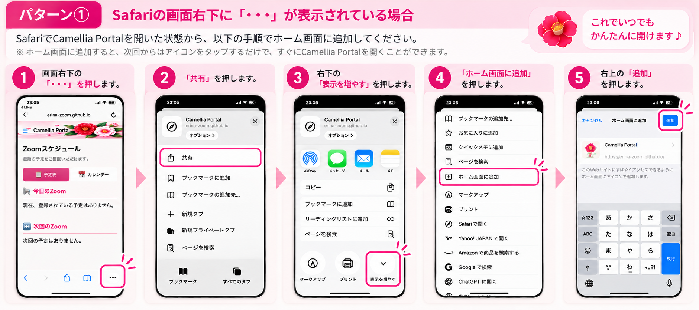
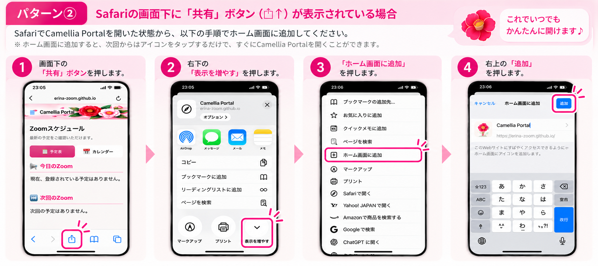
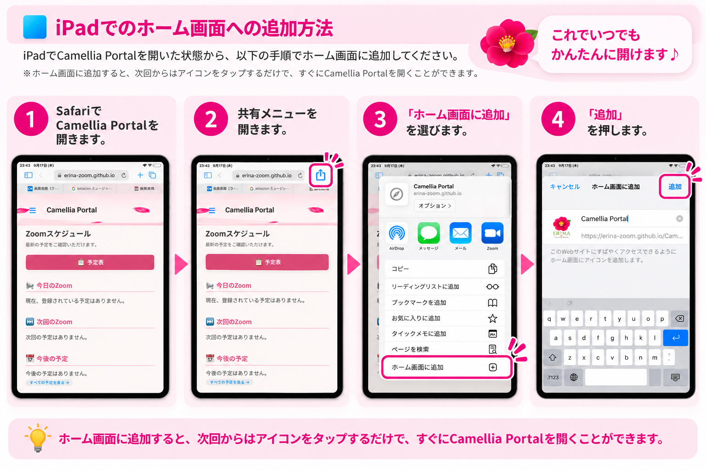
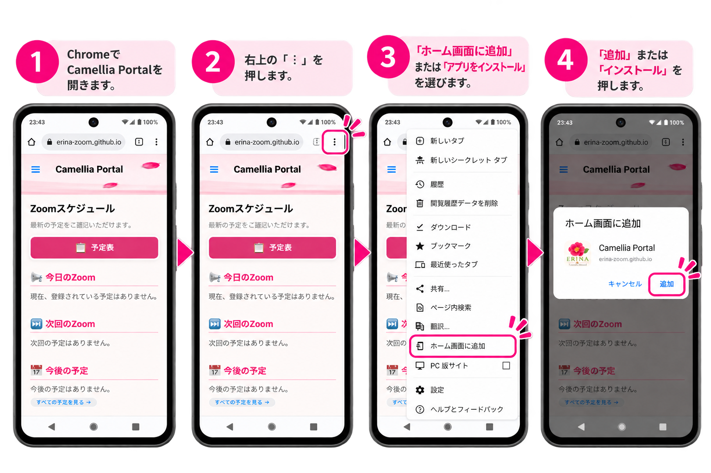

Zoomスケジュール
最新の予定をご確認いただけます。
📢 今日のZoom
⏭ 次回のZoom
📅 今後の予定
🍎 iPhoneでの使い方
Camellia Portalをホーム画面に追加すると、 次回からホーム画面のアイコンをタップするだけで、 すぐに開くことができます。
パターン①
Safariの画面右下に「・・・」が 表示されている場合
SafariでCamellia Portalを開いた状態から、 以下の手順でホーム画面に追加してください。
- 画面右下の「・・・」を押します。
- 「共有」を押します。
- 右下の「表示を増やす」を押します。
- 「ホーム画面に追加」を押します。
- 右上の「追加」を押します。

パターン②
Safariの画面下に「共有」ボタン （□↑）が表示されている場合
SafariでCamellia Portalを開いた状態から、 以下の手順でホーム画面に追加してください。
- 画面下の「共有」ボタンを押します。
- 右下の「表示を増やす」を押します。
- 「ホーム画面に追加」を押します。
- 右上の「追加」を押します。

🟦 iPadでの使い方
iPadでのホーム画面への追加方法を こちらで確認できます。
ホーム画面に追加
- SafariでCamellia Portalを開きます。
- 共有メニューを開きます。
- 「ホーム画面に追加」を選びます。
- 「追加」を押します。

🤖 Androidでの使い方
AndroidではChromeからホーム画面に 追加できます。
ホーム画面に追加
- ChromeでCamellia Portalを開きます。
- 右上の「︙」を押します。
- 「ホーム画面に追加」または 「ショートカットを作成」を選びます。
- 表示された画面で、名前を確認・変更します。
- 「追加」を押します。

📱 Zoomアプリをインストール
Zoomをまだインストールしていない方は、 お使いの端末に合わせて下のボタンから Zoomアプリをインストールしてください。